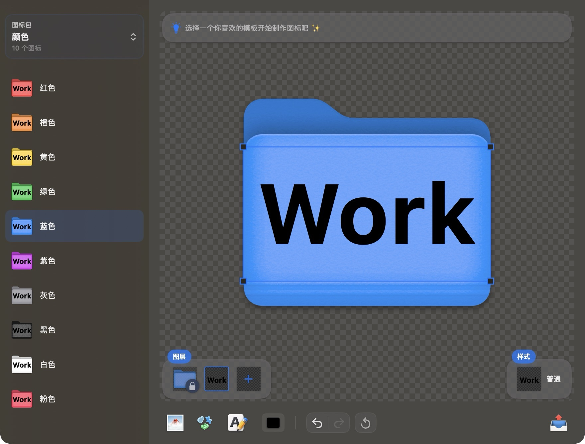
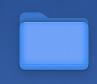
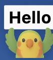
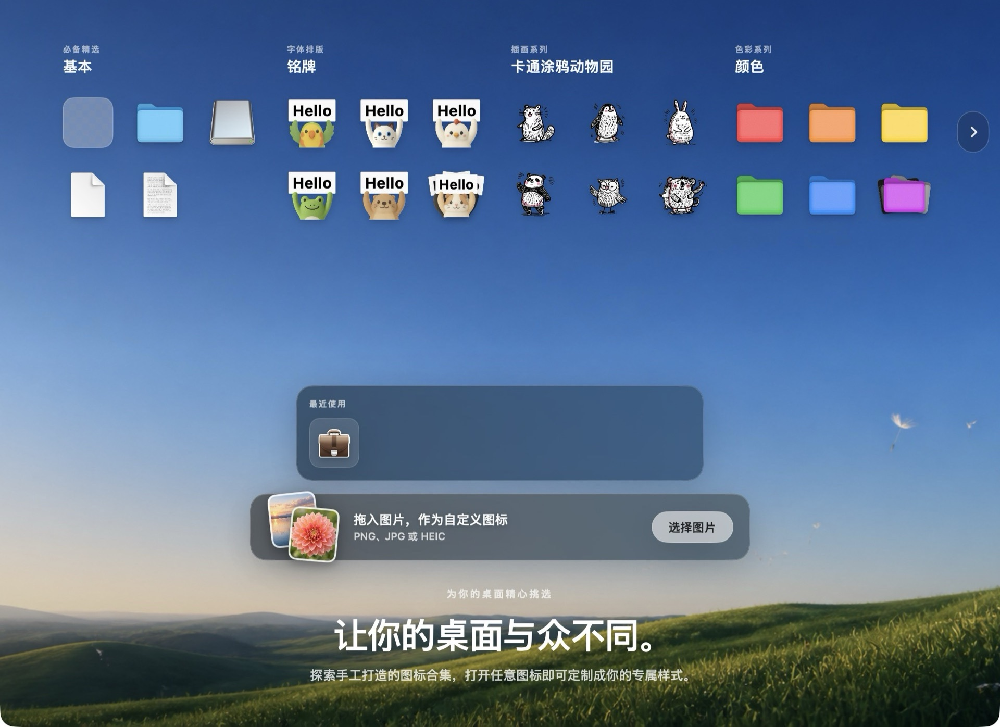
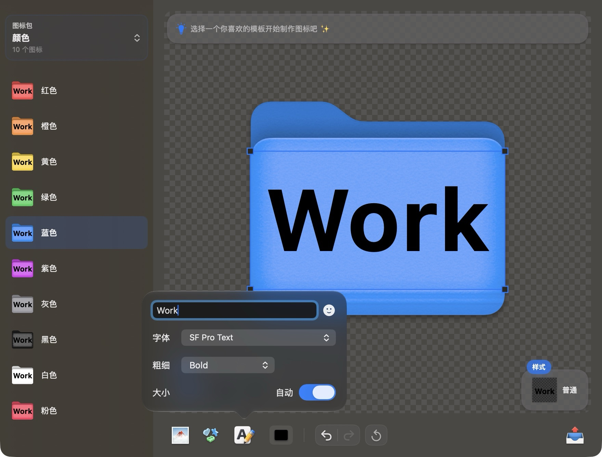
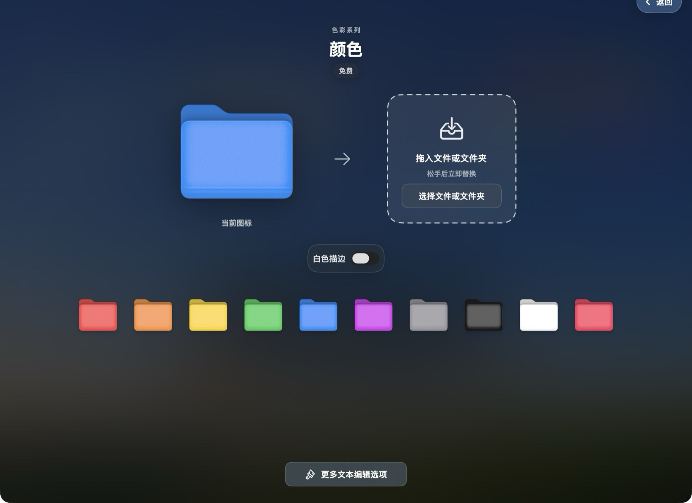
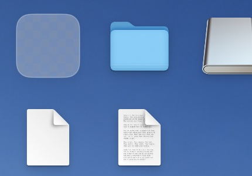
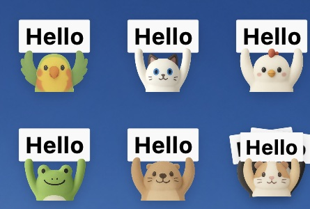
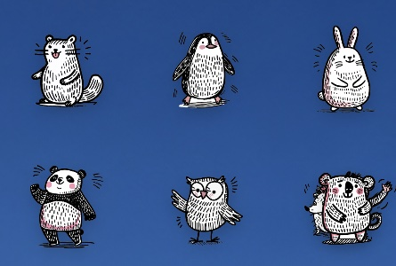
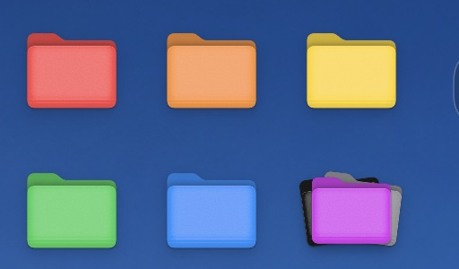

見たままを編集できるレイヤーエディタ
テンプレート＋レイヤー方式で、位置・拡大縮小・回転・3D パース・不透明度・角丸を自由に組み合わせ。変更はすぐに画面に反映されます。

CUSTOM ICONS FOR MAC & FINDER
Moodsk はファイルやフォルダのアイコンに特化したエディタです。画像・SF Symbols・文字からアイコンを作成し、単体でも一括でも適用。いつでも Finder からデフォルトに戻せます。



EVERYTHING YOU NEED
デスクトップの個性付けから一括整理まで、アイコンの交換を Moodsk なら手軽に楽しく。
テンプレート＋レイヤー方式で、位置・拡大縮小・回転・3D パース・不透明度・角丸を自由に組み合わせ。変更はすぐに画面に反映されます。

自分の画像を読み込み、内蔵ブラウザから SF Symbols を選び、文字や絵文字で個性を表現できます。
ノーマル・エンボス・シャドウ・ステッカー・ネオンの 5 スタイルに、着色・フィルター・白フチを組み合わせられます。
一度の編集でアイコンパック全体が更新されます。10 個のフォルダの文字と色味を、ひとまとめに。
複数の項目をキューに入れて同じデザインを一括適用。デフォルトアイコンの一括復元も、進行状況を見ながら行えます。
LAYER-BASED EDITOR
画像・記号・文字を自由に重ねて、フォントファミリーとウェイト、自動サイズ調整、フチやエフェクトまで、細部はすべてあなた次第。

THREE SIMPLE STEPS
厳選アイコンパックを開くか、自分の画像・SF Symbols・文字を読み込みます。
色・拡大縮小・角丸・エフェクトを調整しながら、各レイヤーをその場で仕上げます。
ドラッグ＆ドロップで 1 つずつ入れ替え、一括適用、ワンクリックでデフォルトに復元。
DRAG & DROP
ファイルやフォルダをウィンドウにドラッグすれば、手を離した瞬間にアイコンを置き換え。アイコン付きの新規フォルダを書き出すこともできます。
内蔵 Finder 拡張：Finder でファイルを右クリックして、ワンクリックでデフォルトアイコンに復元。複数選択の一括復元にも対応します。

CURATED PACKS
どのアイコンを開いても自分好みに — 文字を変え、色を変え、バッジを足す。すべて自由。




よくある質問
Moodsk は macOS 14 以降で動作します。Apple Silicon Mac にも対応しています。
自分の画像（PNG・JPG・HEIC・SVG）の読み込み、数千の SF Symbols からの選択、文字と絵文字での作成が可能です。厳選アイコンパックも内蔵しています。
ファイルを Moodsk にドラッグし直せば復元できます。内蔵の Finder 拡張を使えば、Finder で右クリックしてワンクリックで復元。複数選択の一括復元にも対応しています。
いいえ。レンダリングもアイコンの適用もすべてあなたの Mac 上で行われます。Moodsk はオフラインで動作し、データをアップロードすることはありません。